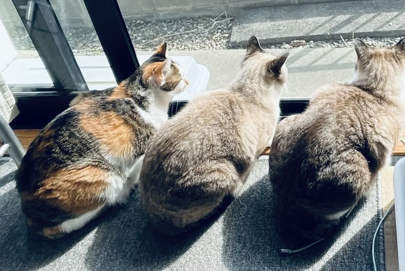

Hello World.
I am Makoto
a co-op student based in Vancouver, Canada
My Story
I am passionate about the intersection of Web Development and Data Science. I love building intuitive web interfaces while also diving deep into data to uncover meaningful insights.
Coming from a psychology background at university, I am fascinated by how people interact with digital environments. My goal is to blend analytical problem-solving with creative design to build applications that genuinely help people—whether that means improving everyday workflow systems or developing user-friendly tools.
What Drives Me
Studious
- Tech: Web Development & Data Science
- Languages: Japanese, English (and exploring Spanish, French, Korean!)
- Academics: University major in Psychology
Fun Stuff
- Digital & Traditional Illustration
- Musicals & Playing Instruments
- Traveling & Lifelong Learning

Love
Animals! Especially my 3 wonderful cats back in my hometown.